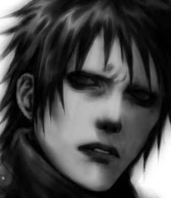
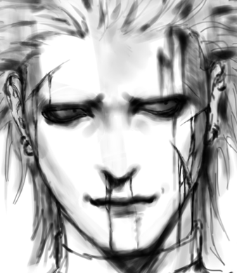
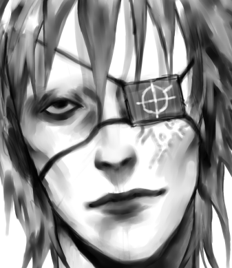
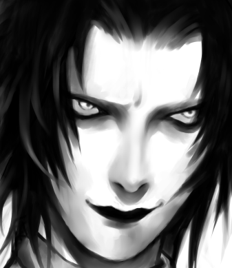
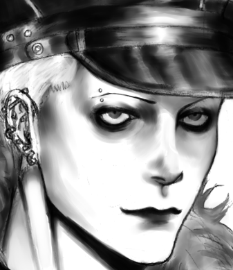
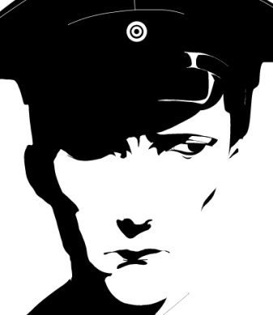
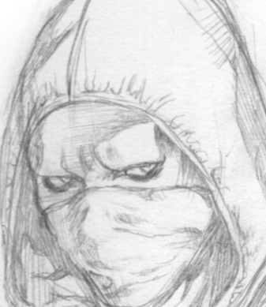

|
NAME: KATYUSHAAGE: 29HEIGHT: 168cmDOB: 01/18Member of Håkan's PMC. Vadim's younger sister. Reserved and takes things day-by-day. Design Notes
|
| Go to bottom | back |
These are my characters that I plan on using in some sort of future comic... It's been something I've been randomly building on since my freshman year of highschool. It's just gonna be a slasher BL or something in a cyber/dystopic setting... Nothing too serious though cuz I can't write that well. I don't really like writing descriptions because I feel embarrassed, preferring to show their traits through drawings and doodles, but I do want to write a little bit about what I was thinking when I made them.
I have a tendency to design my characters in pairs and occasionally in a group of 3 sometimes. A proper gallery page for each character will be made at some point!
Please click the portrait to enter a character's gallery~☆☆|  | NAME: SIDAGE: 25HEIGHT: 193 cmDOB: 04/07A contract killer who is aloof externally, but is incredibly gap moe. :3 Design Notes
|
|  | NAME: NEENZAGE: 2XHEIGHT: 175 cmDOB: 01/16A contract killer working with Sid. Easygoing but behaves erratically. Design Notes
|
"Running in circles like frightened cattle In a frenzied stampede Caught in the spiral of cause and effect Maybe self destruction is a viable Self-regulating system""Self-Regulating System," Pharmakon |
|  | NAME: KAZAGE: 28HEIGHT: 178cmDOB: 08/06Works with Mal at his shop, who also made his prosthetic arm. Characterized by an unusually strong sense of loyalty. Design Notes
|
|  | NAME: MALAGE: 2XHEIGHT: 170cmDOB: 08/11Owns a dingy scrap and prosthetic shop in the outskirts of the city. Haughty and wants to prove his skills. Design Notes
|
"I like to think (it has to be!) of a cybernetic ecology where we are free of our labors and joined back to nature, returned to our mammal brothers and sisters, and all watched over by machines of loving grace.""All Watched Over by Machines of Loving Grace," Richard Brautigan |
|  | NAME: HÅKANAGE: Late 30sHEIGHT: 185cmDOB: 06/26Founder and leader of a PMC called Segervittring. His eyes hold a sinister quality to them despite his cordial and charming persona. Has strange tastes. Design Notes
|
|  | NAME: JANAGE: Late 30sHEIGHT: 183cmDOB: 02/07Member of Håkan's PMC. High-strung, meticulous, and a little bit pathetic. Design Notes
|
|
|
NAME: KATYUSHAAGE: 29HEIGHT: 168cmDOB: 01/18Member of Håkan's PMC. Vadim's younger sister. Reserved and takes things day-by-day. Design Notes
|
|  | NAME: VADIMAGE: 32HEIGHT: 188cmDOB: 12/27Member of Håkan's PMC. Katyusha's older brother. A bit of a tsundere type. Design Notes
|
"Beat your plowshares into swords
and your pruning hooks into spears.
Let the weakling say,
'I am strong!'”
Joel 3:10
|

| Go to top | back |